Now that we presented the "social required justification for the professional use of time" lets cut the crack and go to the fun part of presenting the characters! Bellow there is a table showing each character in the let column and a small profile for each one of the characters.
|
Res Component: Resistor Name: Resemblance with the name of the component. Design: It smokes a cigar to be associated with "power dissipation" in the form of heat. |
|
| 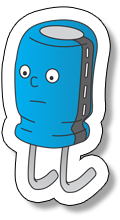 |
Cap Component: Capacitor (polarized) Name: Resemblance with the name of the component. Design: Its passive appearance remembers the "filtering and stabilization" in circuits such as rectifiers. |

|
uCap Component: Capacitor (non-polarized) Name: Resemblance with the name of the component. Design: Its infant appearance aims to remember that normally those components have very low values of capacitance. |
| 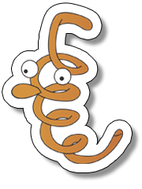 |
Bob Component: Inductor Name: Personification of the Latin derivate name bobbin (for coil) Design: It was designed to look just passive (to remind that it is a passive component). |
| 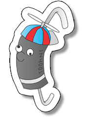 |
Dioido Component: Diode Name: Resemblance with the name of the component and association with the word "crazy" in Latin languages. Design: Its crazy look is a reminder that it is a "bipolar" component, reflecting its characteristics of allowing current in one direction and not in another. |
| 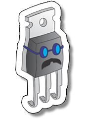 |
Tip Component: Power Transistor Name: Resemblance with the name of the most common commercial name for devices (eg. TIP31). Design: Its "robotized" looking serves to associate the component with its signal and some times digital use (to make logic gates). |
| 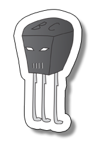 |
BC Component: Signal Transistor Name: Resemblance with the name of the most common commercial name for devices (eg. BC548). Design: Its "hard work" looking reminds us that this component is used in power circuits. |
| 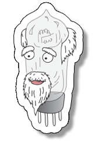 |
Voválvula Component: Vacuum Tube Name: Resemblance with the name of the component and association with the word "grandpa" in Latin languages. Design: Its old looking associates the component with obsoleteness and reminds us about its "retired" status as an electronic component. |
| 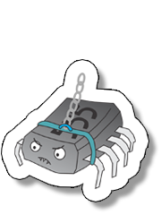 |
Totó Component: Integrated Circuit Name: Resemblance with a common pet name. Design: Its pet appearance is just a pictorial characterization of the "multiple legged" device. |
| 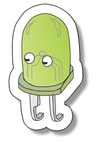 |
Led Component: Led Name: Name of the component. Design: Its robotized appearance associates the component to its use in modern (and frequently digital) circuitry. |
| 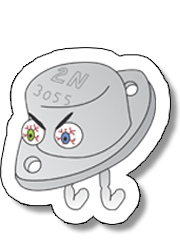 |
2N Component: High Power Transistor Name: Resemblance with the name of the most common commercial name for devices (eg. 2N3055). Design: Its "angry" looking reminds us that this component is used in circuits with high values of currents. |
| 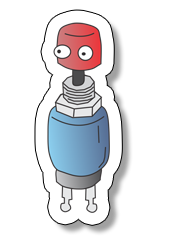 |
BT Component: Switch Name: Resemblance with the abbreviation used in circuits (for button). Design: Its "aerial" appearance tries to associate with the fact that it is not being in control (users actually control its state). |
| 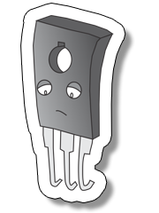 |
BD Component: Medium Power Transistor Name: Resemblance with the name of the most common commercial name for devices (eg. DB49). Design: Its sad looking associates with being between two classes (power and signal) transistors and them the frequent forgotten component. |
| 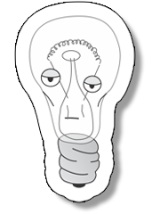 |
Lamp Component: Light Bulb Name: Another name for the component. Design: Its indifferent looking associates with not being used in circuits directly. Rather being used to an end itself (illuminate). |
| 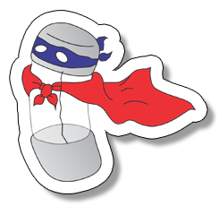 |
Fuzz Component: Fuse Name: Resemblance with the sound of the name of the component. Design: Its "super hero" looking is a reminder of its function that is to "save" the rest of the circuits in the presence of a current peak. |